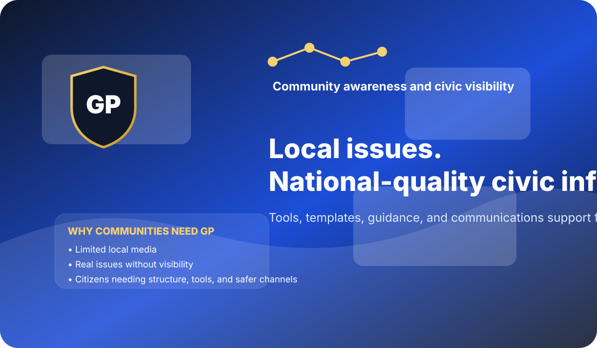

This guide establishes the visual language for GP so the platform presents as a serious national civic organization with consistent authority, clarity, and public-facing credibility.
Use the horizontal logo for headers and documents, the stacked logo for presentations or centered layouts, and the icon for favicon, profile images, and watermarking.
Primary horizontal logo for headers, reports, and website navigation.
Stacked version for centered layouts, graphics, and materials where height is preferred.
Dark-background variant for video graphics, banners, and deep-color sections.
Icon mark for favicon, social profile image, and simple identity use.
GP’s palette communicates responsibility, seriousness, public trust, and community-centered authority.
Large headlines should be direct, citizen-centered, and mission-driven. Supporting text should avoid jargon, stay readable, and maintain the tone of a national civic platform rather than a local advocacy page or generic social group.
Graphics and layouts should suggest seriousness, structure, civic responsibility, and strategic communications capability. Avoid playful visuals, bright consumer colors, or anything that reads as partisan or informal.
The hero graphic is designed to reinforce that GP offers national-quality civic infrastructure for local issues and community visibility.
